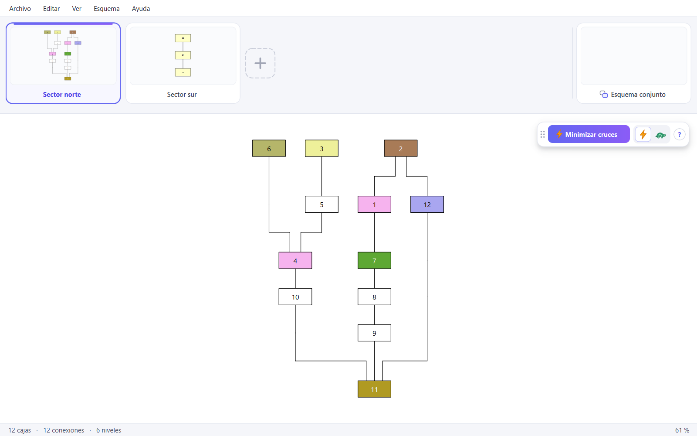

Crea, organiza y une matrices Harris con un dibujo automático, claro y con los mínimos cruces.
Descargar para Windows
Dibujar una matriz Harris a mano es lento y cada cambio obliga a rehacerla. Aquí solo dices qué unidad está sobre cual y el dibujo se reorganiza solo.
Tras cada cambio, las cajas y sus conexiones se recolocan solas. Un clic minimiza los cruces de líneas.
Une en un solo esquema los de distintas zonas de la excavación y conecta las unidades que comparten.
Crea, conecta y fusiona unidades y también arrastra cajas o bloques enteros con el ratón.
Lleva bloques o esquemas completos a otro esquema, incluso entre dos ventanas abiertas.
Guarda cada esquema como imagen, o el proyecto entero en PDF, listo para tu memoria o informe.
La aplicación avisa cuando hay una versión nueva y se actualiza sola, sin volver a esta página.
Un instalador normal de Windows, en español. No hace falta ser administrador.